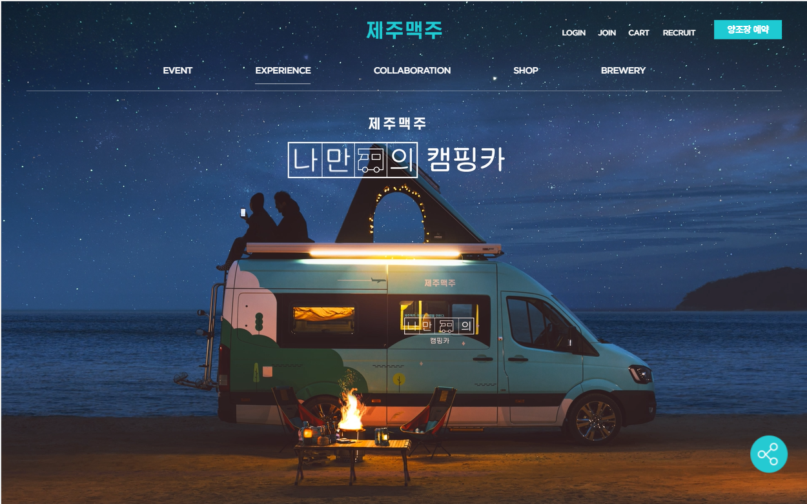

홈 영역
Hello,
my name is Hyerin
my name is Hyerin
WEB PUBLISHER HYERIN'S PORTFOLIO.
CONTACT ME자기소개 영역
About me

-
Education
- 2018.02 용인대학교 경영정보학과 졸업
- 2014.02 서울여자고등학교 졸업
-
Certificate
- 2021.10 웹디자인기능사 필기 합격
- 2018.08 (국가공인)전산회계 2급 취득
- 2018.05 컴퓨터활용능력 1급 취득
- 2017.08 워드프로세서 1급 취득
- 2016.02 MOS Master 취득
- Advantage
-
Skills
- HTML5
- CSS3
- JQuery
- JavaScript
포트폴리오 영역
Portfolio #01

제주맥주
- HTML
- CSS
- JavaScript
- JQuery
반응형 웹(pc 버전 / mobile 버전 css 파일 분리하여 작성 및 관리)
참여도: 퍼블리싱 개인 100%
메인 페이지 1개, 서브 페이지 4개, floating button에 모달창 생성, sns 연동
단순히 메인 페이지에서 그치는 것이 아닌, 다양한 서브 페이지를 만들어 최대한 기존 웹사이트와 동일하게 구현하고자 노력하였습니다.
참여도: 퍼블리싱 개인 100%
메인 페이지 1개, 서브 페이지 4개, floating button에 모달창 생성, sns 연동
Portfolio #02
Portfolio #04
WISEWEDDING
- HTML
- CSS
- JavaScript
- JQuery
반응형 웹(pc 버전 / mobile 버전 css 파일 분리하여 작성 및 관리)
참여도: 퍼블리싱 개인 100%
메인 페이지 1개, 서브 페이지 3개, 이미지 슬라이드 jQuery로 구현
단순히 메인 페이지에서 그치는 것이 아닌, 다양한 서브 페이지를 만들어 최대한 기존 웹사이트와 동일하게 구현하고자 노력하였습니다.
참여도: 퍼블리싱 개인 100%
메인 페이지 1개, 서브 페이지 3개, 이미지 슬라이드 jQuery로 구현
연락처 영역
Contact Me
저의 포트폴리오를 끝까지 봐주셔서 감사합니다.
연락 주시면 확인 후 최대한 빠른 회신드리겠습니다.
Web Publisher